HERRAMIENTAS TRADICIONALES DEL TALLER
Para desarrollar cualquier proyecto tecnológico en el aula-taller, necesitamos seleccionar y manejar las herramientas adecuadas. Una herramienta es un instrumento que permite realizar trabajos mecánicos o manuales con mayor precisión, menor esfuerzo y mayor seguridad. Las herramientas se agrupan en distintas familias tecnológicas según la función o el tipo de trabajo que realizan.
Norma Básica del Taller: Cada herramienta ha sido diseñada para una función específica. Usar una herramienta para algo distinto a su cometido (por ejemplo, usar un destornillador como palanca o tijeras para cortar alambre grueso) es peligroso y puede deteriorar el equipamiento.
1.1. Herramientas para medir, marcar y trazar
Antes de cortar o conformar cualquier material, es fundamental medir con exactitud y trasladar las dimensiones del diseño sobre el material de trabajo. Este proceso evita el malgasto de materia prima.
- Regla graduada de acero: Construida en acero inoxidable para evitar su desgaste. Permite medir longitudes directas y trazar líneas rectas con precisión de milímetros.
- Flexómetro (o metro de cinta metálica): Dispone de una cinta metálica flexible graduada que se enrolla dentro de una carcasa. Indicado para medir distancias largas (de 2 a 5 metros).
- Escuadra de taller: Formada por una regla de acero fija a un cartabón de hierro o aluminio a 90º. Sirve para comprobar la perpendicularidad de las caras de una pieza y trazar líneas a 90º y 45º.
- Transportador de ángulos o goniómetro: Instrumento graduado que permite medir y transportar ángulos sobre el material de trabajo.
- Calibre o pie de rey: Instrumento de medición de alta precisión (capaz de apreciar décimas o centésimas de milímetro). Permite medir diámetros exteriores, diámetros interiores y profundidades en piezas pequeñas.
- Punta de marcar (o trazador): Varilla de acero templado afilada en punta dura. Se utiliza para rayar y dejar marcas permanentes en superficies metálicas o plásticas donde el lápiz no se adhiere.
- Compás de puntas de acero: Compás rígido con dos puntas metálicas. Se utiliza para trazar circunferencias y arcos sobre metal y madera, o para transportar distancias exactamente.
- Nivel de burbuja: Instrumento con tubos de líquido y una burbuja de aire que indica si una superficie está perfectamente horizontal, vertical o a 45º.
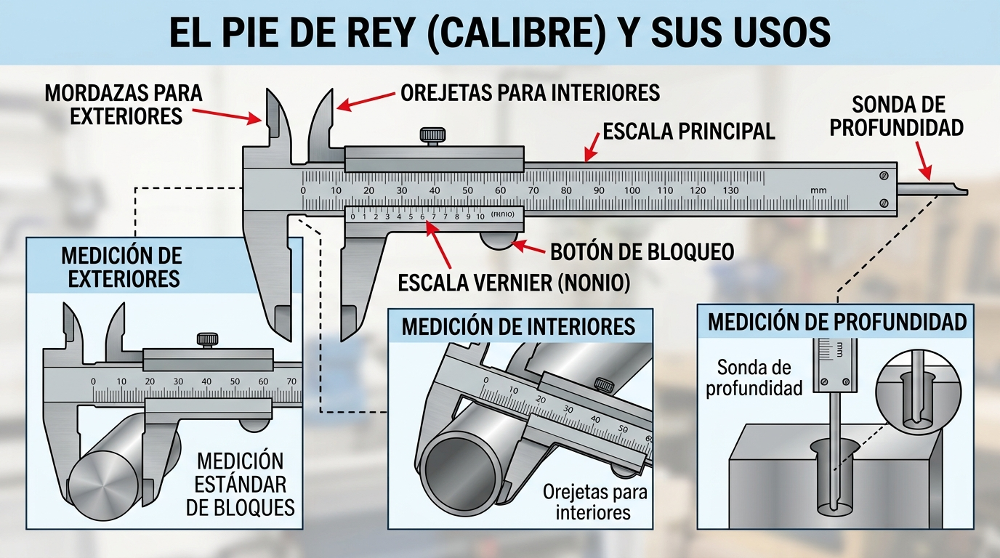
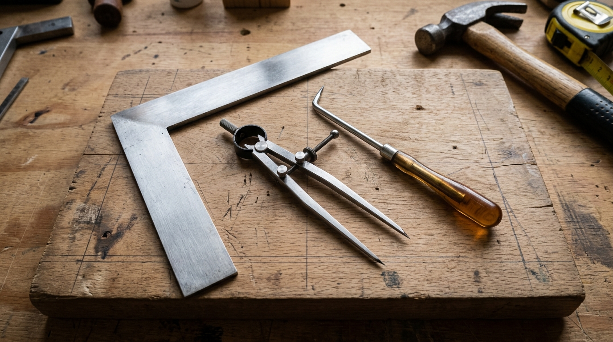
1.2. Herramientas de corte
Permiten separar o seccionar materiales para obtener las dimensiones deseadas por desprendimiento de viruta o por cizalladura.
- Serrucho ordinario y de costilla: Herramienta manual para cortar madera. El serrucho de costilla cuenta con un refuerzo metálico en la parte superior de la hoja que le da rigidez, permitiendo cortes muy rectos y finos.
- Sierra de marquetería (o de pelo): Consta de un arco de metal en forma de 'U' donde se tensa un hilo dentado fino (pelo de sierra). Es ideal para calar y realizar cortes curvos sobre maderas finas (como el contrachapado de 3 o 4 mm).
- Sierra de metal (sierra de arco): Dispone de una hoja de acero con dientes pequeños y duros montada sobre un arco metálico. Diseñada para cortar tubos y perfiles de metal y plástico.
- Sierra eléctrica de calar (caladora): Máquina eléctrica portátil dotada de una hoja fija que realiza un movimiento vaivén vertical rápido. Permite realizar cortes rectos o curvos en tablas de madera, plásticos y chapas metálicas según el tipo de hoja instalado.
- Tijeras de electricista: Tijeras de hojas cortas, muesca pelacables e insuladas con empuñadura de material aislante homologado para evitar descargas eléctricas.
- Tijeras para chapa (tijeras de aviación): Diseñadas con gran ventaja mecánica para cortar láminas finas de metal (aluminio, latón o chapa de acero fino).
- Cúter: Cuchilla retráctil muy afilada sostenida por una carcasa plástica o metálica. Utilizada para cortar cartón, papel, goma EVA y láminas finas de plástico. Requiere el uso de regla metálica como guía.
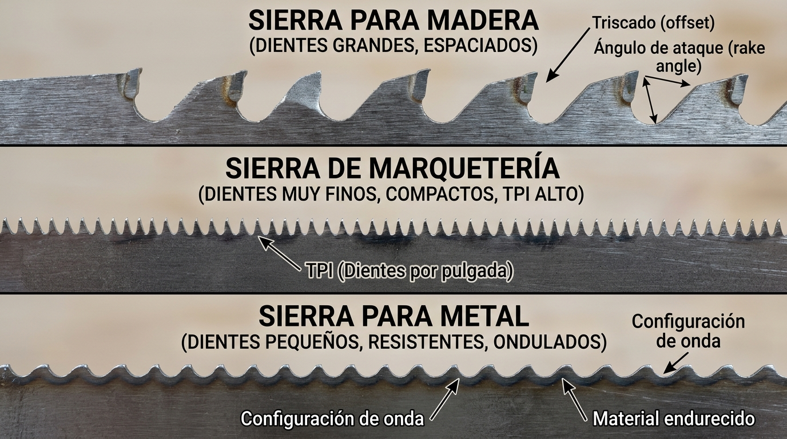
1.3. Herramientas de percusión
Diseñadas para transmitir un impacto sobre un material o sobre otra herramienta con la finalidad de deformar, clavar, ensamblar o romper.
- Martillo de peña: Cuenta con una cabeza metálica con una cara plana (para golpear) y un extremo en forma de cuña o peña (ideal para clavar clavos pequeños de tapicería o sujetar puntas).
- Martillo de bola: Superficie redonda en uno de sus extremos, muy empleado en conformado de metales, remachado y trabajos mecánicos.
- Martillo de orejas: Incorpora dos ganchos curvados (orejas) en el extremo opuesto a la cara de golpeo. Esta forma permite hacer palanca y extraer clavos doblados con facilidad.
- Maceta de albañil: Martillo pesado con dos caras planas, empleado para golpear cinceles o romper materiales duros.
- Maza de goma o nailon: Diseñada para golpear piezas delicadas, ensambles de madera o chapa sin dejar marcas ni deformar el material.
1.4. Herramientas para desbastar, limar y pulir
Tienen como objetivo arrancar pequeñas virutas o polvo de material para rebajar dimensiones, eliminar rebabas cortantes y dar un acabado suave a las piezas.
- Limas: Barras de acero templado con la superficie labrada en forma de dientes (estriado). Se clasifican según su forma plana, redonda, de media caña, cuadrada o triangular. Permiten alisar bordes en metales y plásticos.
- Escofinas: Herramientas parecidas a las limas pero con resaltes individuales y gruesos en forma de pirámide. Arrancan gran cantidad de material rápidamente y se usan únicamente en madera maciza.
- Papel de lija: Soporte de papel o tela sobre el que se adhiere un grano abrasivo (óxido de aluminio o carburo de silicio). La finura de la lija depende de su número de grano: a menor número, grano más grueso y desbaste más agresivo.
- Lijadora orbital: Máquina-herramienta eléctrica que imprime un movimiento vibratorio orbital a la lija adaptada en su base, facilitando el lijado de grandes superficies planas de madera.
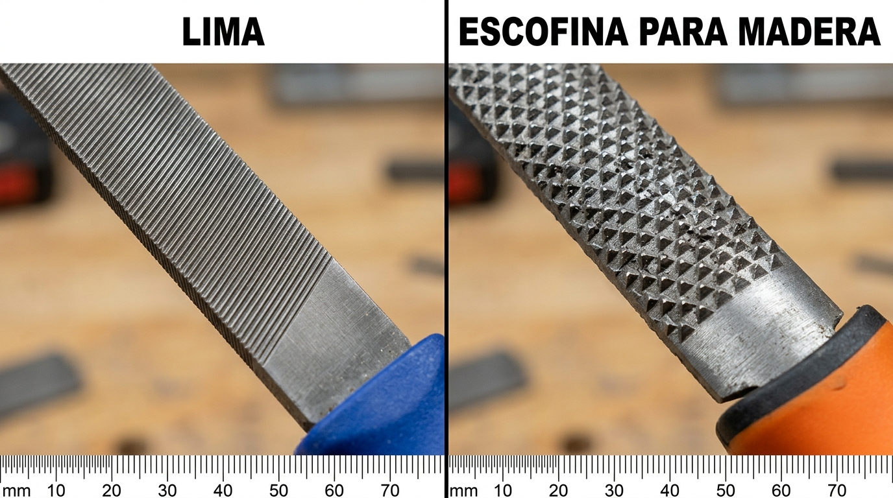
1.5. Herramientas de perforación
Sirven para realizar agujeros cilíndricos en distintos materiales mediante la rotación de un accesorio cortante denominado broca.
- Barrena: Herramienta manual de rosca helicoidal con empuñadura en 'T'. Se gira con la mano para hacer pequeños taladros guía en madera blanda.
- Taladro portátil (de cable o batería): Máquina eléctrica provista de un portabrocas que gira a altas revoluciones. Los modelos a batería ofrecen portabilidad en el taller, mientras que los de cable ofrecen mayor potencia para perforaciones continuas.
- Taladro de columna (o de sobremesa): Máquina fija anclada a la mesa de trabajo. Permite realizar taladros perfectamente verticales y con profundidad regulable con la máxima precisión y seguridad.
Tipos de Brocas:
- Broca para madera: Tiene una punta centradora muy afilada en el extremo.
- Broca para metal (HSS): Punta cónica con ángulo de 118º y acanaladura helicoidal.
- Broca para pared/hormigón: Cuenta con una plaquita de metal duro (widia) en la punta en forma de flecha.
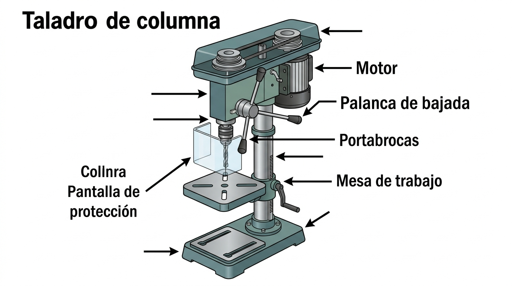
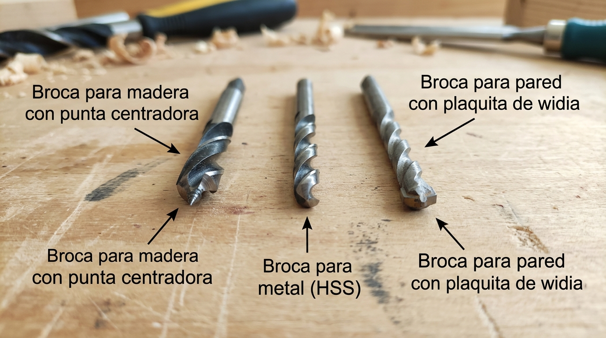
1.6. Herramientas de sujeción y montaje
Son imprescindibles para mantener inmóviles las piezas mientras se mecanizan (cortan, taladran, liman) o para mantenerlas unidas firmemente durante el secado de adhesivos.
- Tornillo de banco: Mecanismo integrado en las mesas del taller con dos mordazas de hierro que se abren o cierran mediante una palanca roscada. Inmoviliza firmemente la pieza de trabajo.
- Sargento o gato de marquetería: Herramienta de sujeción portátil en forma de 'C' o 'F'. Se fija mediante un tornillo roscado para presionar piezas sobre la mesa o unir tablas durante el encolado.
- Alicates universales: Herramienta manual multifunción que sirve para sujetar piezas, doblar pletinas y cortar alambres gracias a su zona dentada y cuchilla integrada.
- Alicates de punta plana o redonda: Alicates de mordazas finas para manipular componentes pequeños, doblar terminales de cables eléctricos o dar forma a hilos metálicos.
- Grip o alicate de presión: Alicates que se bloquean sobre la pieza fijando la fuerza de apriete mediante un tornillo en el mango.
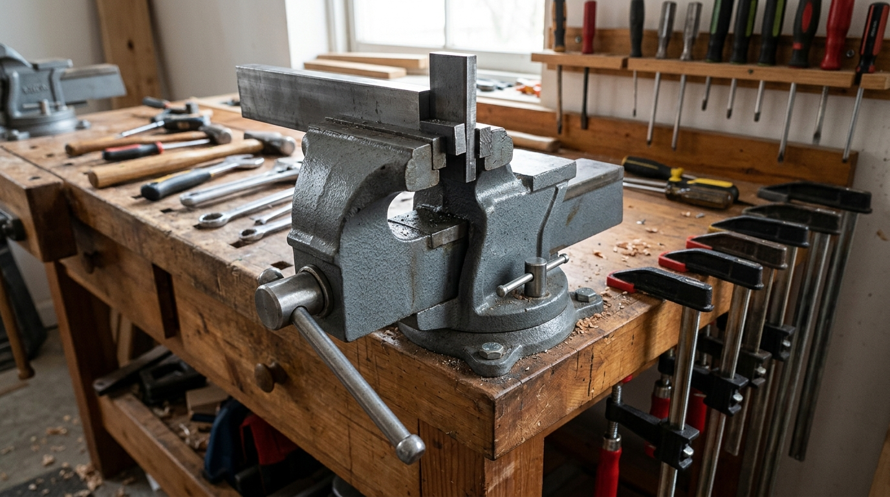
1.7. Herramientas para atornillar y uniones mecánicas
Destinadas a realizar uniones desmontables entre piezas empleando tornillos, tuercas y elementos roscados.
- Destornilladores (plano, Philips/estrella y Pozidriv): Herramientas con mango aislante y varilla de acero que encajan en la cabeza de los tornillos. Se debe elegir exactamente el tamaño y forma que coincida con la huella del tornillo.
- Llaves fijas (plana y de estrella): Herramientas de acero al cromo-vanadio de dimensiones estandarizadas en milímetros. Se utilizan para apretar o aflojar tuercas y tornillos hexagonales.
- Llave inglesa: Llave ajustable provista de una muesca móvil regulable mediante un sinfín. Permite adaptarse a diferentes medidas de tuerca.
- Llave Allen: Varilla de sección hexagonal doblada en 'L'. Se encaja dentro de las cabezas de tornillos con huella hexagonal embutida.
FABRICACIÓN DIGITAL Y PROTOTIPADO
En el currículo actual de 2º de ESO incorporamos las tecnologías de fabricación aditiva y corte digital, que nos permiten pasar directamente de un modelo 3D diseñado en ordenador a un objeto físico real.
| Tecnología / Herramienta | Descripción del Funcionamiento | Aplicación en el Aula-Taller |
|---|---|---|
| Impresora 3D (FDM) | Deposita filamento termoplástico (como PLA) fundido capa por capa mediante un extrusor caliente controlando ejes X, Y y Z. | Creación de engranajes, soportes, carcasas personalizadas y piezas mecánicas diseñadas en Tinkercad. |
| Cortadora / Grabadora Láser | Utiliza un haz de luz láser de alta potencia para cortar o grabar con precisión milimétrica sobre materiales finos. | Corte rápido de piezas de contrachapado, metacrilato o cartón para maquetas estructurales. |
| Plotter de Corte / Vinilo | Dispone de una pequeña cuchilla orientable que se desplaza sobre una lámina de vinilo adhesivo o papel. | Recorte de señalética para el taller, pegatinas protectoras y circuitos flexibles en lámina de cobre. |
| Soldador Eléctrico de Estaño | Herramienta térmica que transforma energía eléctrica en calor en su punta fina (alcanza aprox. 350ºC). | Unión fija permanente de cables eléctricos, motores de CC e interruptores en circuitos de proyectos. |
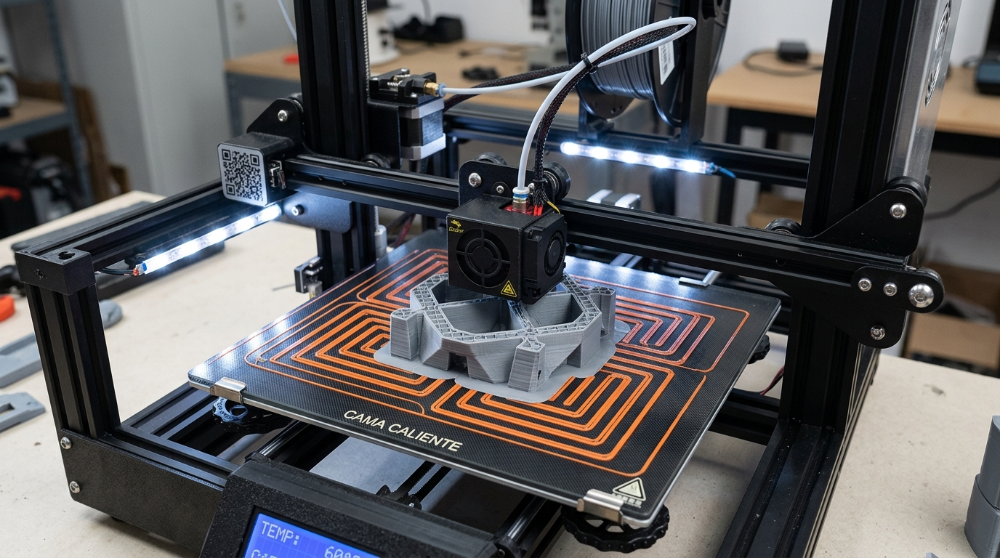
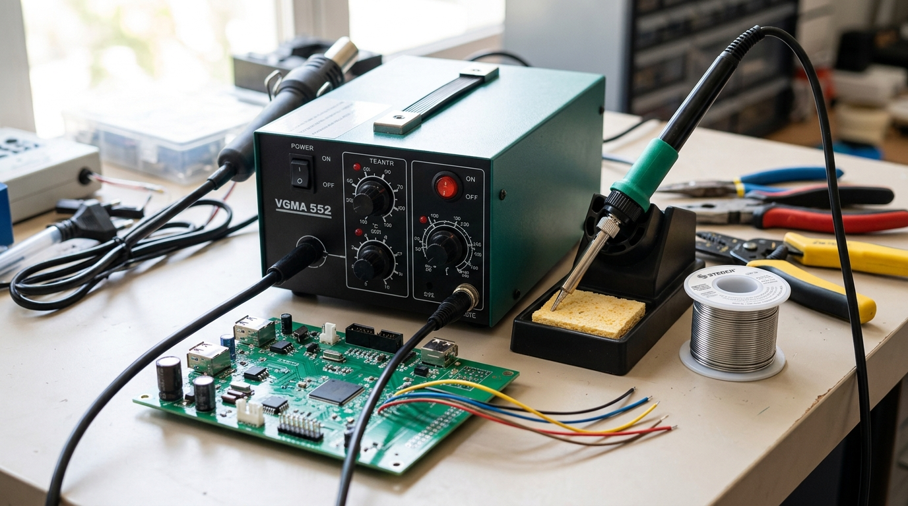
ORGANIZACIÓN Y NORMAS DE SEGURIDAD
3.1. Ficha de Organización de Herramientas y Normas de Seguridad
Tabla Resumen de Uso Correcto y Riesgos de Herramientas
| Familia | Herramienta Clave | Uso Principal | Riesgo Principal |
|---|---|---|---|
| Trazado | Calibre / Pie de rey | Medición precisa en mm | Caída o descalibración |
| Corte | Sierra de calar | Corte rápido en tablas | Atrapamiento / Corte en manos |
| Percusión | Martillo de peña | Clavado de puntas | Golpe en dedos |
| Desbaste | Lima / Escofina | Alisado de bordes y virutas | Clavado de la espiga si falta mango |
| Perforación | Taladro de columna | Agujeros verticales precisos | Enganche de pelo/ropa en la broca |
| Sujeción | Tornillo de banco | Inmovilizar la pieza | Pellizco al cerrar mordazas |
| Fabricación Digital | Impresora 3D / Soldador | Prototipado / Soldadura eléctrica | Quemaduras por altas temperaturas |
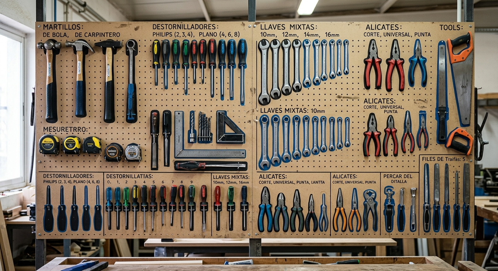
3.2. Reglas de Seguridad e Higiene en el Taller
- 1. Equipos de Protección Individual (EPIs): Es obligatorio el uso de gafas de protección cuando utilicemos el taladro, la lijadora o herramientas que desprendan esquirlas o virutas.
- 2. Ropa adecuada: Llevar el pelo largo siempre recogido con una goma. Evitar bufandas, colgantes o mangas anchas que puedan ser atrapadas por máquinas giratorias.
- 3. Inspección visual: Antes de usar cualquier herramienta (especialmente eléctricas o martillos), verifica que no tenga el mango suelto, la estructura agrietada o el cable dañado.
- 4. Sujeción previa: NUNCA sujetes con la mano una pieza pequeña mientras la taladras o la cortas con la caladora; utiliza SIEMPRE el tornillo de banco o un sargento.
- 5. Uso del soldador: El soldador de estaño se debe depositar siempre en su soporte metálico mientras no se esté aplicando. Nunca tocar la punta metálica.
- 6. Orden en el panel: Al finalizar la sesión, cada herramienta debe limpiarse con un cepillo y volver a su silueta asignada en el panel del taller.
- 7. Zona de trabajo despejada: Mantener la mesa limpia de virutas, objetos de basura o herramientas innecesarias para el trabajo actual.
- 8. Atención y actitud: No se permite correr, jugar ni distraer a los compañeros mientras están operando herramientas de corte o maquinaria.
- 9. Desconexión eléctrica: Para cambiar una broca en el taladro o una hoja en la sierra eléctrica, la máquina debe estar desenchufada de la red eléctrica.
- 10. Higienización personal: Al terminar la clase de taller, lávate detenidamente las manos con agua y jabón para retirar restos de polvo, aceites o resinas.
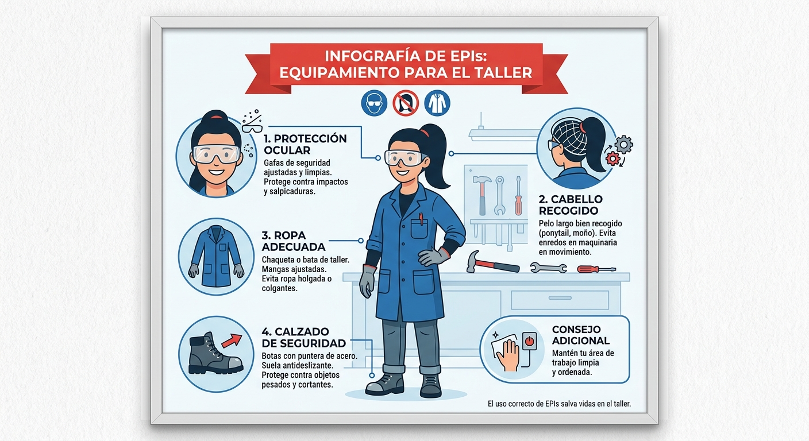
Material Didáctico y Evaluación
Accede a toda la documentación de trabajo, herramientas de repaso interactivas y cuestionarios de la unidad.
1. Documentación y Fichas de Trabajo
2. Práctica y Repaso Interactivo
3. Evaluación Final
¡Ponte a prueba con el Test Final!
Comprueba lo aprendido sobre las familias de herramientas, fabricación digital y normas de seguridad en el taller.